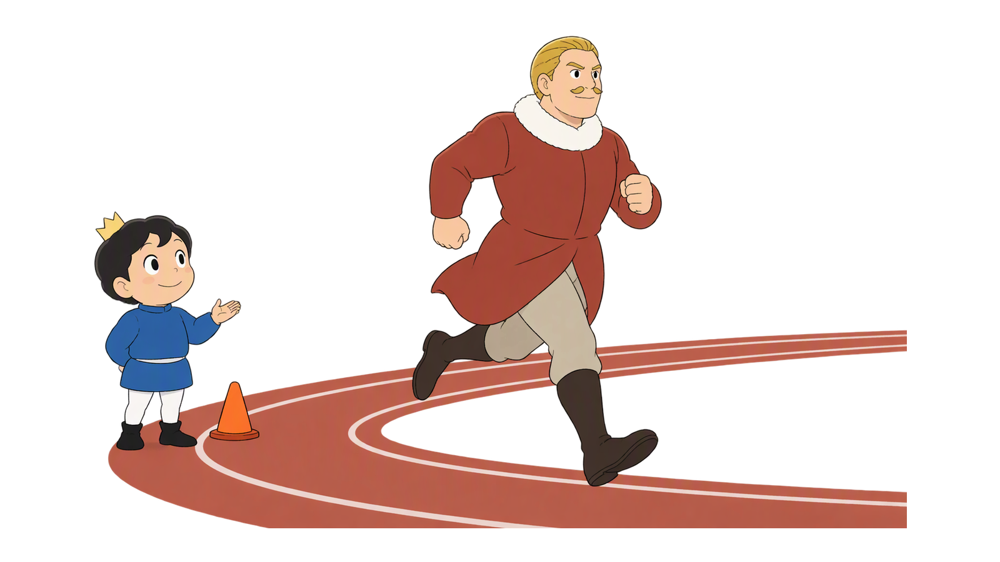
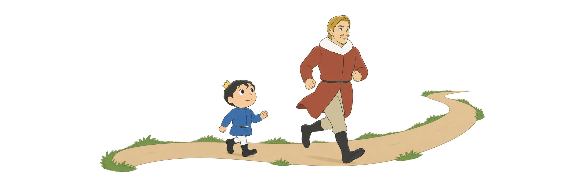
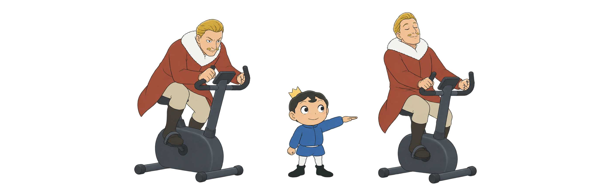
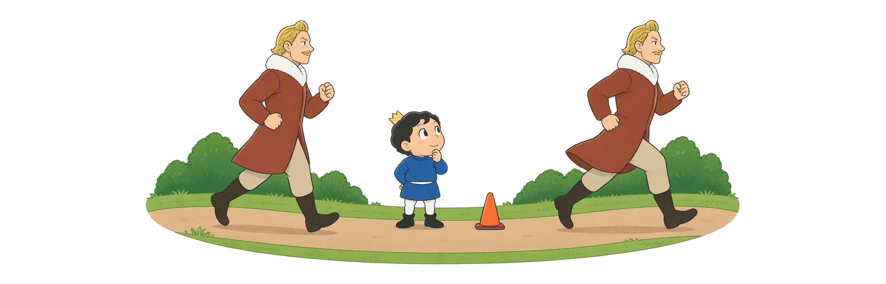
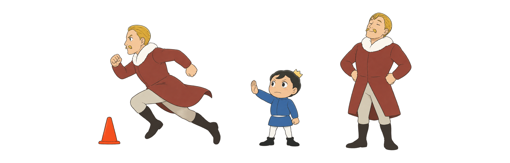
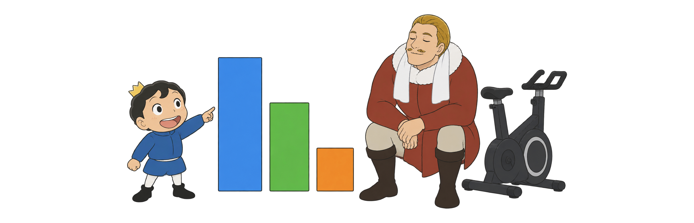
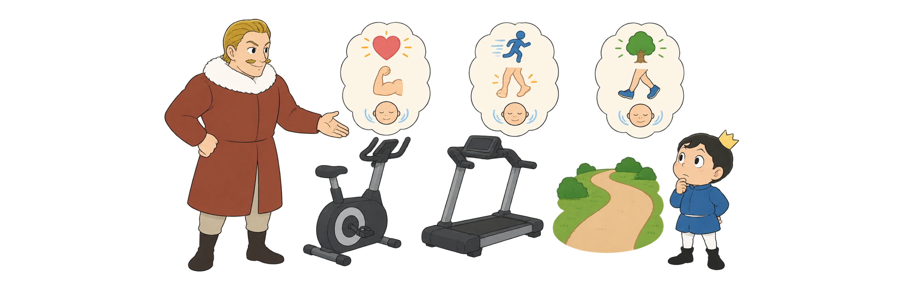

Day 51
有氧训练方法
每种方法是什么 有什么用、怎么练
持续打底分段质量全周分布

每种方法是什么 有什么用、怎么练
先弄清持续、间歇、变速和重复训练，再看一周该怎么安排。
不停下，稳定活动
练一段，缓一段
连续运动中变快变慢
快一小段，充分恢复
看整周轻、中、难训练
按目标和恢复来选
这些名称不是难度排名；先选能安全完成、第二天也能恢复的版本。
例如连续快走或骑车20分钟，中途不安排冲刺和休息段。

例如骑车稍快1分钟、慢骑2分钟，重复3轮。

例如快走到下一盏路灯，再慢走到呼吸平稳，全程不停。

它与普通间歇的重点差别，是用更充分的恢复保住每一趟的速度和动作。

它们说的是整周轻松、中等和较难训练各占多少，不是一节课的做法。

方法不是越累越好，先看目标、现在的基础，以及练完能不能恢复。
